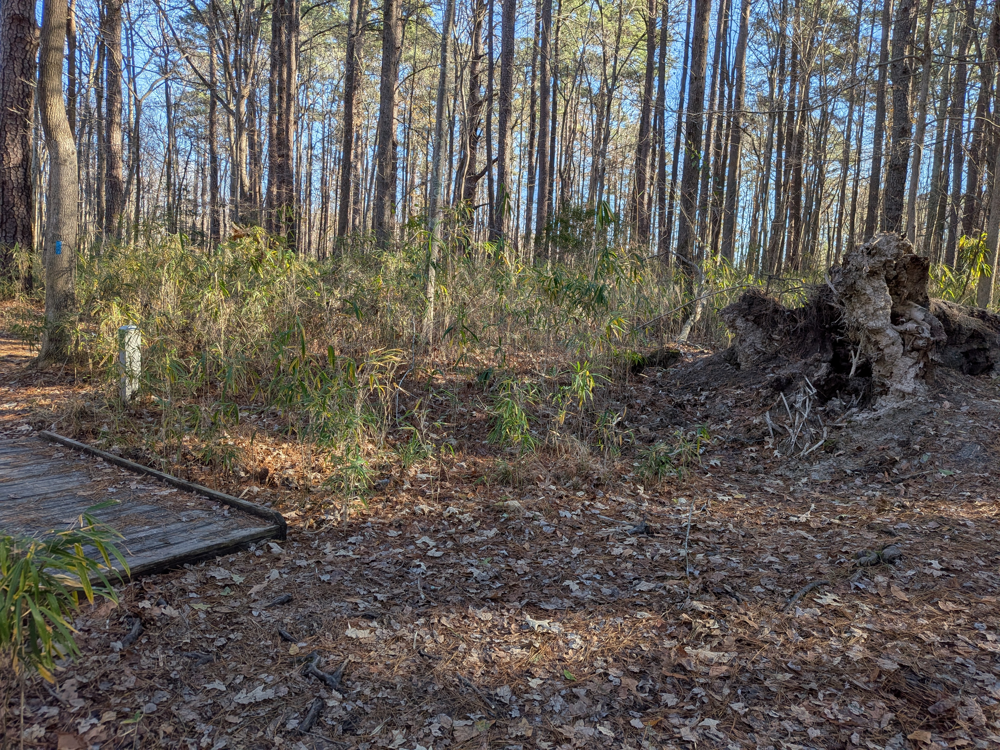
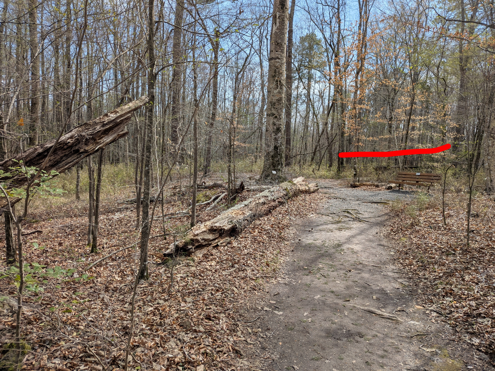
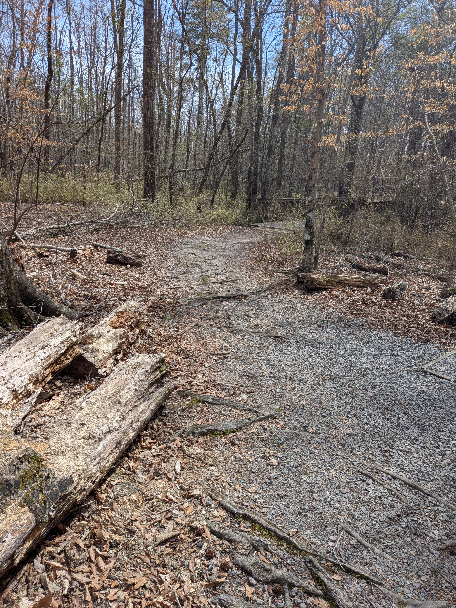

Bridges and Tree Falls
A Photojournal
There seems to be a correlation between small wooden bridges in the forest and fallen trees. This photojournal gives some example images.
Stumpy Lake

Northwest River Park
First image with bridge marked by red

